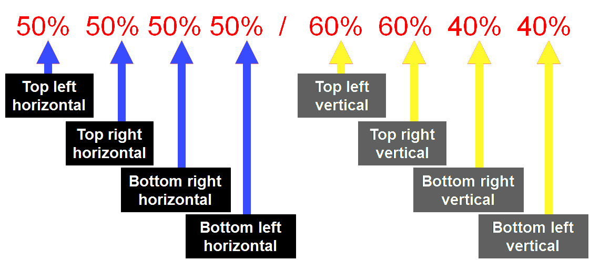
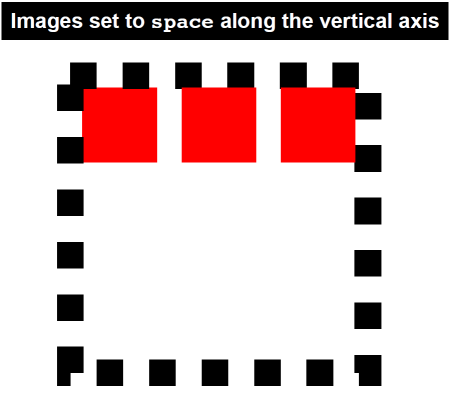
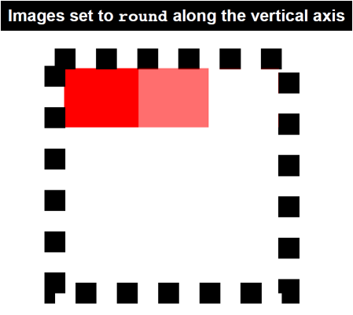

HTML5 Open Academy


Other options:
All the previous demos are pure HTML/JS/CSS
And this is what we are going to learn today.
CSS = Cascading Style Sheets.
Syntax we are using to describe the look and formatting of a website to the browser.
Unlike CSS 2, which is a large single specification defining various features,
CSS 3 is divided into several separate documents called modules.
Each module adds new capabilities or extends features defined in CSS 2, over preserving backward compatibility.
Work on CSS level 3 started around the time of publication of the
original CSS 2 recommendation.
The earliest CSS 3 drafts were published in June 1999
selectors are patterns used to select the element(s) you want to style
tr:nth-child(even) {background: #CCC}
tr:nth-child( 2n ) {background: #CCC}
tr:nth-child(odd ) {background: #FFF}
tr:nth-child(2n+1) {background: #FFF}
| Header1 | Header2 |
|---|---|
| Cell1 | Cell2 |
| Cell1 | Cell2 |
| Cell1 | Cell2 |
| Cell1 | Cell2 |
| Cell1 | Cell2 |
.selectorsDemo+span {
color: red;
display: none;
}
.selectorsDemo:checked+span {
color: green;
display: inline-block;
}
HTML4 and CSS2 currently support media-dependent style sheets tailored for different media types.
For example, a document may use different fonts and colors when displayed on a screen and for printed.
<link rel="stylesheet" type="text/css" media="screen" href="screen.css">
<link rel="stylesheet" type="text/css" media="print" href="print.css">
Media queries extend the functionality of media types by allowing more precise labeling of style sheets.
Media queries allow us to change our layouts to suit the exact need of different devices
without changing the content to a specific range of output devices and screen sizes.
Media type is a combination of type and expression.
<link rel="stylesheet" type="text/css" media="
screen and (width) ">
An expression is combination of zero or more media features (width, height, color ...).
Media query expression return true or false
The css will be applied if the expression is true
Media features are enclosed within braces.
For example if we have css for desktop and for iphone:
<link rel=... media="all and (min-width: 480px and max-width:640px)">
<link rel=... media="all and (min-width: 640px)">
@font-face{
font-family:'HPSimplified';
font-weight:normal;
font-style:normal;
src:url(http://www8.hp.com/h10180/hp-fonts/v2-0/hps-euro-w01-regular-eot.eot);
src:url(http://www8.hp.com/h10180/hp-fonts/v2-0/hps-euro-w01-regular-eot.eot?#iefix)
format('embedded-opentype'),
url('http://www8.hp.com/h10180/hp-fonts/v2-0/hps-euro-w01-regular-woff.woff') format('woff'),
url('http://www8.hp.com/h10180/hp-fonts/v2-0/hps-euro-w01-regular-ttf.ttf') format('truetype');
}
@font-face{
font-family:'HPSimplified';
font-weight:bold;
font-style:normal;
src:url(http://www8.hp.com/h10180/hp-fonts/v2-0/hps-euro-w01-bold-eot.eot);
src:url(http://www8.hp.com/h10180/hp-fonts/v2-0/hps-euro-w01-bold-eot.eot?#iefix)
format('embedded-opentype'),
url('http://www8.hp.com/h10180/hp-fonts/v2-0/hps-euro-w01-bold-woff.woff') format('woff'),
url('http://www8.hp.com/h10180/hp-fonts/v2-0/hps-euro-w01-bold-ttf.ttf') format('truetype');
}
A web-font for creating multi-layered weather icons
There are several ways to define colors:
[black, blue, gray, green, white, yellow ...
] 147 keywords
[#rrggbb]
[#000000=black, #FFFFFF=white][#rgb]
[#000=black,
#FFF=white].digits are duplicated
rgb(r,g,b)
[rgb(0%,0%,0%)
=black,rgb(100%,100%,100%)=white].values :0-100
rgb(r,g,b)
[rgb(0,0,0)
=black,rgb(255,255,255)=white].values :0-255
hsl(200,10%,50%)*There are several ways to define colors:
opacity(0-1) [opacity(1) -
visible,
opacity(0) - transparent].values :0.0-1.0
rgba(r,g,b,a)
[rgb(0%,0%,0%,1) =black,rgb(100%,100%,100%,1)=white].rgba(r,g,b,a)
[rgb(0,0,0,1)
=black,rgb(100,100,100,.5)=white 50% opacity].hsl(200,10%,50%, 0.5)*hsl(200,10%,50%)
hsl(200,10%,50%)
The first value is for Hue and must be a integer value between 0 and 359.
hsl(200,10%,50%)
The second value is for Saturation and must be defined as a percentage value.
hsl(200,10%, 50%)
The third value is Lightness and must also be defined as a percentage value.
CSs3 keywords include gray, grey, darkgrey and darkgray.
There are 3 boxes:
The box is defined using 4 values in the following order:
If one of the values is missing it will be filled in the following way:
The CSS3 border-radius property allows you to easily apply rounder corners to elements without using images.
There are few ways to define border radius.
If all four corners have the same radius, you can use the shorthand border-radius property with a single value.
border-radius:10px; -> border-radius:10px 10px 10px 10px;
border-radius:50% 50% 50% 50%/60% 60% 40% 40%;

The CSS3 text-shadow property allows you to apply one or more shadows to any block of text.
The property takes 3 lengths values and a color value.
text-shadow:
+/- x Offset
+/- y Offset
Blur
Color
The CSS3 box-shadow property allows you to apply one or more shadows to any box.
You can define outer and inner box shadows.
The property allows 4 length values, a color value and an optional “inset” keyword.
text-shadow:
+/- x Offset
+/- y Offset
Blur
Spread
Color
The box-shadow should follow any curved corners that have been defined with border-radius.
CSS2 five background-properties:
CSS2 syntax:
background-position: 10px 10px;
CSS3 syntax:
background-position: left 10px top 15px;
In CSS2.1, we could change the repeat behaviour using four different keywords.
In CSS3, we can now define background-repeat using two values instead of one.
background-repeat: repeat repeat;
Backward compatibility: background-repeat: repeat [repeat];
CSS3 also allows us to use two new values with the background-repeat property:
space
round
The space value sets the image
to repeat as often as will fit within the background area and then
the images are spaced out to fill the area.
The first and last images touch the edges of the area.

The round value sets the image
to repeat as often as will fit within the background area.
If it doesn't fit a whole number of times, it is rescaled so that it does.
Be aware that the background images may be stretched or distorted using this method.

CSS3 offers three entirely new background properties:
The background-origin property is used to determine where background images are positioned inside a box.
The background-clip property is used to determine where and if background images are clipped (or cut off) inside the background area.
The background-size property allows us to set the size of our background images.
background-size: 10px 20px;
We can set the size using length values, percentage values or one of two new keywords:
contain, cover
With CSS2.1, we could only add one background image to any HTML element.
CSS3 allows us to add multiple background images to any element!